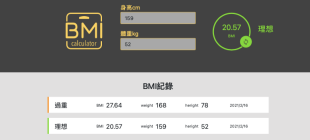

-程式語言-
Web Layout
- 手刻 RWD
- 基本 Bootstrap 排版
- 了解 Git/Github 基本指令
JS Framework
- Vue.js
- Vue CLI 3.0
- Vue Router
Front-end Development
- jQuery 動態效果
- JS語法、ES6 語法
- AJAX 獲取遠端資料
-自學經驗-
Vue.js - 全台空氣預測
用AJAX抓取行政院環保署資料，以元件呈現資料、篩選，用localStorage儲存。
Vue.js - 代辦事項
用基本的Vue指令如v-model, v-bind,v-class等，製作代辦事項清單。
JavaScript - 高雄旅遊景點網頁
用AJAX串接政府的Open Data， 並進行資訊篩選、排版及相關功能。

JavaScript - BMI計算器
讓使用者輸入資料進行BMI 計算及刪除， 並使用 localStorage 儲存計算結果。
HTML/CSS - 線上前端課程
利用基本的HTML/CSS語法，排出具專業、語意化、美觀的網頁設計。
-學經歷-
-
前端工程師實戰班 / 六角學院線上課
2020 年 9 月 - 2021 年 2 月
-
教育部外派印尼 - 教師
2019 年 - 2020 年
-
食力新媒體 - 數位行銷
2017 年 - 2019 年
-
國立政治大學 - 廣告學系/外交學系
2013 年 - 2017 年